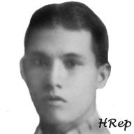

| History |
| Legislators |
| Laws |
| About |
 |
| LEGISLATORS |
| LEGISLATIVE BODY (YEAR) | INCLUSIVE YEARS | LEGISLATIVE DISTRICT/PROVINCE | LEGISLATOR | ||
| 1 | 1st Philippine Legislature | 1907 - 1909 | 1st District Ambos Camarines | AREJOLA, Tomas |  |
| 2 | 1st Philippine Legislature | 1907 - 1909 | 2nd District Ambos Camarines | REY, Manuel |  |
| 3 | 1st Philippine Legislature | 1907 - 1909 | 3rd District Ambos Camarines | ALVAREZ, Francisco |  |
| 4 | 2nd Philippine Legislature | 1910 - 1912 | 1st District Ambos Camarines | AREJOLA, Tomas | |
| 5 | 2nd Philippine Legislature | 1910 - 1912 | 2nd District Ambos Camarines | CONTRERAS, Fulgencio |  |
| 6 | 2nd Philippine Legislature | 1910 - 1912 | 3rd District Ambos Camarines | FUENTEBELLA, Jose |  |
| 7 | 3rd Philippine Legislature | 1912 - 1916 | 1st District Ambos Camarines | CECILIO, Silverio D. |  |
| 8 | 3rd Philippine Legislature | 1912 - 1916 | 2nd District Ambos Camarines | OCAMPO, Julian |  |
| 9 | 3rd Philippine Legislature | 1912 - 1916 | 3rd District Ambos Camarines | FUENTEBELLA, Jose | |
| 10 | 4th Philippine Legislature | 1916 - 1919 | 1st District Ambos Camarines | ESCALANTE, Gonzalo S. |  |
| 11 | 4th Philippine Legislature | 1916 - 1919 | 2nd District Ambos Camarines | REY, Manuel | |
| 12 | 4th Philippine Legislature | 1916 - 1919 | 3rd District Ambos Camarines | CEA, Sulpicio V. |  |
| 13 | 5th Philippine Legislature | 1919 - 1922 | Lone District Camarines Norte | HERNANDEZ, Gabriel |  |
| 14 | 6th Philippine Legislature | 1922 - 1925 | Lone District Camarines Norte | ZENAROSA, Jose D. |  |
| 15 | 7th Philippine Legislature | 1925 - 1927 | Lone District Camarines Norte | CARRANCEJA, Rafael |  |
| 16 | 8th Philippine Legislature | 1928 - 1930 | Lone District Camarines Norte | LUKBAN, Agustin | |
| 17 | 9th Philippine Legislature | 1931 - 1934 | Lone District Camarines Norte | LUKBAN, Miguel |  |
| 18 | 10th Philippine Legislature | 1934 - 1935 | Lone District Camarines Norte | HERNANDEZ, Gabriel | |
| 19 | 1st National Assembly (Commonwealth) | 1935 - 1938 | Lone District Camarines Norte | PIMENTEL, Froilan |  |
| 20 | 2nd National Assembly (Commonwealth) | 1939 - 1941 | Lone District Camarines Norte | PIMENTEL, Froilan | |
| 21 | National Assembly (Japanese Regime) | 1943 - 1944 | Camarines Norte | ZENAROSA, Trinidad P. | |
| 22 | National Assembly (Japanese Regime) | 1943 - 1944 | Camarines Norte | ASCUTIA, Carlos | |
| 23 | 1st Congress of the Commonwealth (Liberation Period) | 1945 - 1945 | Lone District Camarines Norte | VINZONS, Wenceslao Q. |  |
| 24 | 2nd Congress of the Commonwealth | 1946 - 1946 | Lone District Camarines Norte | ECO, Esmeraldo |  |
| 25 | 1st Congress of the Republic | 1946 - 1949 | Lone District Camarines Norte | ECO, Esmeraldo | |
| 26 | 2nd Congress of the Republic | 1950 - 1953 | Lone District Camarines Norte | ECO, Esmeraldo | |
| 27 | 3rd Congress of the Republic | 1954 - 1957 | Lone District Camarines Norte | PAJARILLO, Fernando V. |  |
| 28 | 4th Congress of the Republic | 1958 - 1961 | Lone District Camarines Norte | VENIDA, Pedro A. |  |
| 29 | 5th Congress of the Republic | 1962 - 1965 | Lone District Camarines Norte | PIMENTEL, Marcial R. |  |
| 30 | 6th Congress of the Republic | 1966 - 1969 | Lone District Camarines Norte | PAJARILLO, Fernando V. | |
| 31 | 7th Congress of the Republic | 1970 - 1972 | Lone District Camarines Norte | PAJARILLO, Fernando V. | |
| 32 | Regular Batasang Pambansa | 1984 - 1986 | Camarines Norte, Region V | PADILLA, Roy B. |  |
| 33 | 8th Congress of the Republic | 1987 - 1992 | Lone District Camarines Norte | UNICO, Renato M. |  |
| 34 | 9th Congress of the Republic | 1992 - 1995 | Lone District Camarines Norte | PIMENTEL, Emmanuel B. |  |
| 35 | 10th Congress of the Republic | 1995 - 1998 | Lone District Camarines Norte | PIMENTEL, Emmanuel B. | |
| 36 | 11th Congress of the Republic | 1998 - 2001 | Lone District Camarines Norte | PADILLA, Roy Jr. A. |  |
| 37 | 12th Congress of the Republic | 2001 - 2004 | Lone District Camarines Norte | UNICO, Renato Jr. J. |  |
| 38 | 13th Congress of the Republic | 2004 - 2007 | Lone District Camarines Norte | UNICO, Renato Jr. J. | |
| 39 | 14th Congress of the Republic | 2007 - 2010 | Lone District Camarines Norte | VINZONS-CHATO, Liwayway P. |  |
| 40. | 15th Congress of the Republic | 2010-2013 | 1st Distric Camarines Norte | UNICO, RENATO JR. J.
|
|
| 41. | 15th Congress of the Republic | 2010-2013 | 2nd Distric Camarines Norte | PANOTES, ELMER E. |  |

Congressional Library Bureau
Legislative Library Service